| 日付 | 2025年7月26日（土） |
|---|---|
| 山域 | 駿河 |
| メンバー | 家族（妻） |
| 山行形態 | 日帰り |
| アクセス | 車 |
| ルート (Map) | 旧道登山口 (9:10) - (9:35) 肝冷しの滝 - (10:18) 穂積神社 - (11:06) 薬師岳 - (11:24) 文殊岳 (12:12) - (13:05) 道白山 - (13:39) 旧道登山口 |
本日は天候が安定しない予報。
奥多摩に行こうと考えていたが、昼過ぎから雷雨の可能性があるため
内陸部の山を避けて静岡県の竜爪山に行くことにする。
身延山地の南端にある信仰の山で、標高は1000mちょっと。
この時期に登るのは暑そうだ。
駐車場に到着。標高360m。
すでに駐車場は一杯で、手前の路肩も車で埋まっていた。
車を停めにくそうな僅かな隙間に駐車する。
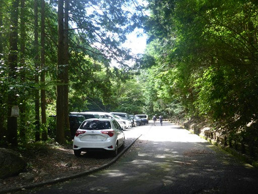
冷たい水が出ている。
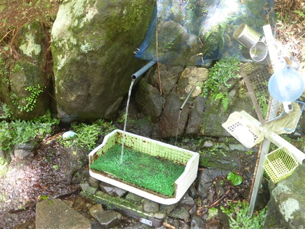
登山開始。登山口には立派な鳥居が立っている。
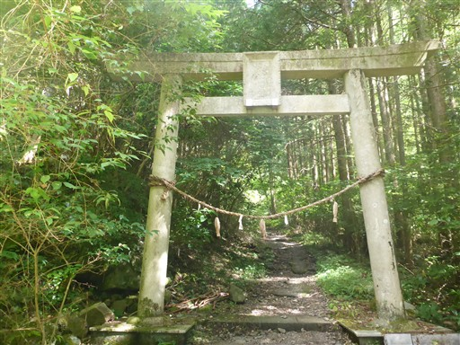
最初は沢沿いの道。水の音が心地よい。
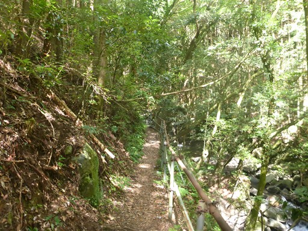
沢を橋で渡る。
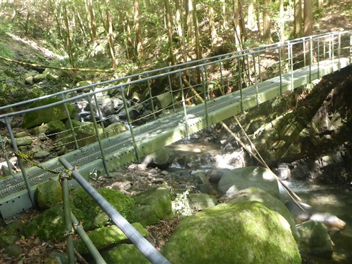
丁石。一、二は見逃したようだ。歩き始めてすぐでもう三丁目なので
かなり短い間隔で置かれているようだ。
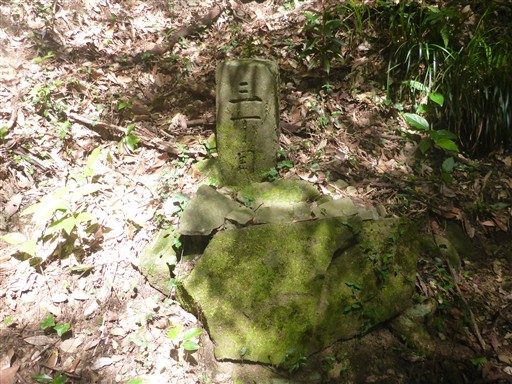
登山者が多いだけあって、登山道はよく整備されている。
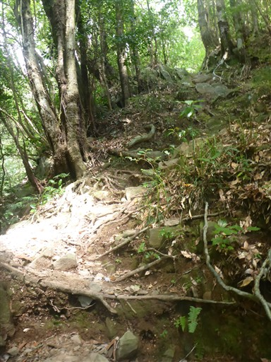
「スベルのるな」の落書きがされた石。

肝冷しの滝の標識。少し足を延ばして寄り道してみる。
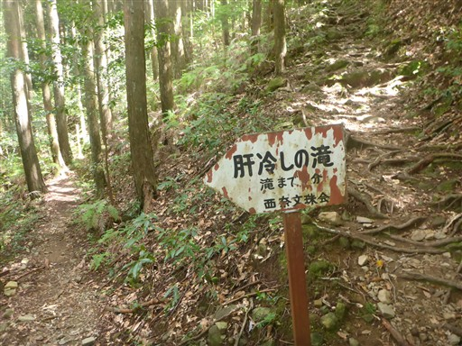
肝冷しの滝。
ちょっと無理をしないと近づくことはできず、
遠くから見守るのみにしておく。
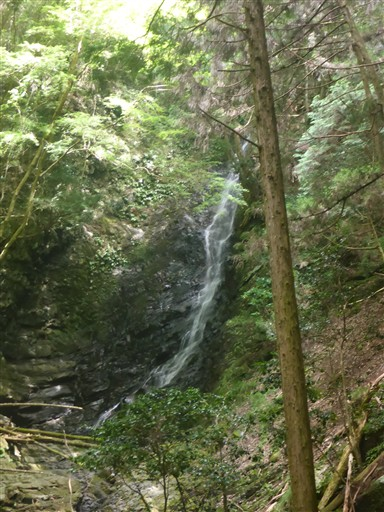
十一丁目。十丁目が神社ではないようだ。
その後、三十丁目は確認したが、いくつまであったのだろう？
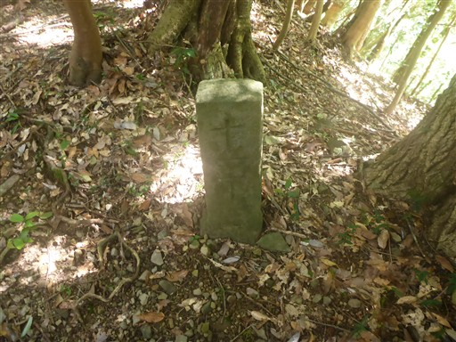
沢沿いの道から斜面を登り、尾根道になる。

穂積神社に到着。立派な石碑が立っている。
2005年に作られたものらしい。比較的新しい。
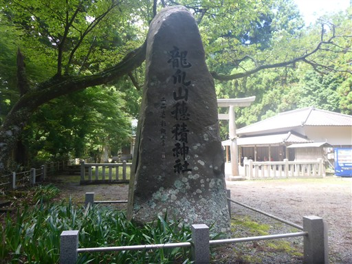
穂積神社の鳥居。登山口の鳥居もそうなのだが、縄の位置がなぜか低い。
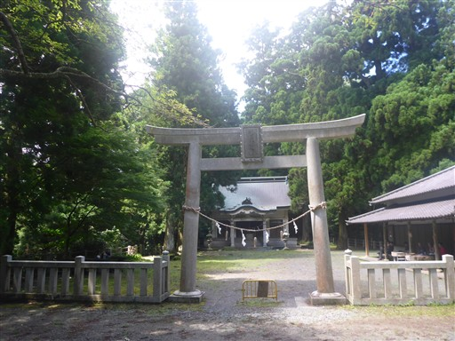
創建は不詳らしいが、建物自体は比較的新しそうだ。
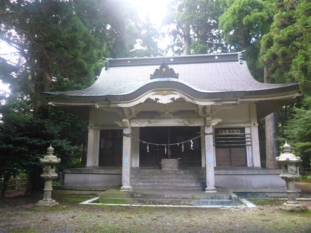
神社の裏にある樹齢五百年の夫婦杉。
木の足元が見事に融合している。
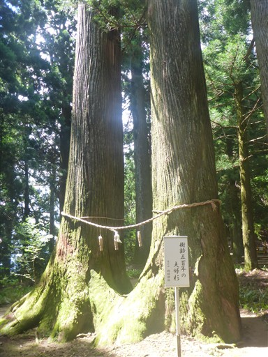
ここからしばらくは杉の巨木が立ち並ぶ登山道になる。
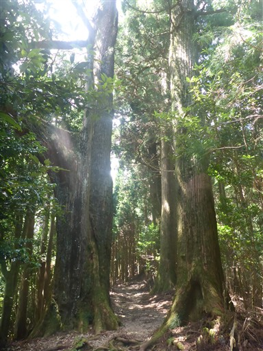
謎の空間。そばに竜爪山の解説板があったが、この場所についての説明はなかった。
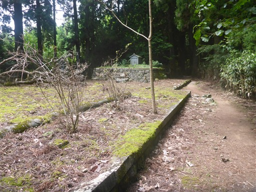
オレンジ色の目立つキノコ。
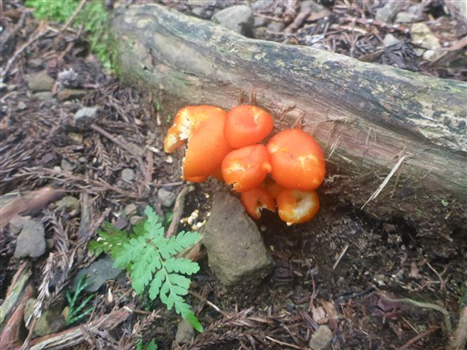
ここから突然急坂が始まる。ひたすらに階段が続く。
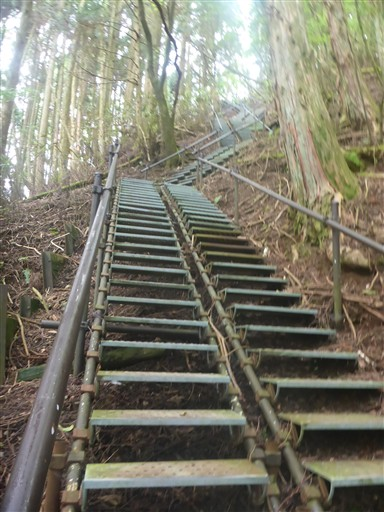
木の上に本日の日付が表示されている。
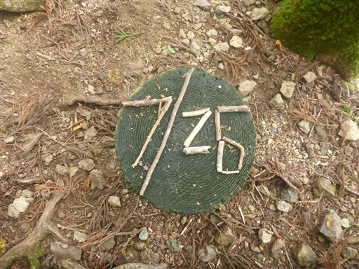
稜線に到着。気温計が置かれている。
目盛りがほとんど見えないが、20度程度のようだ。
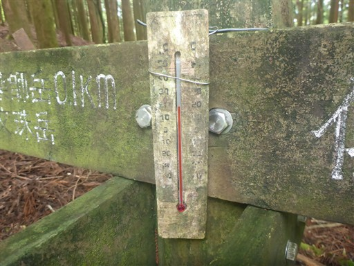
木の上に絵を描いた石が置かれている。
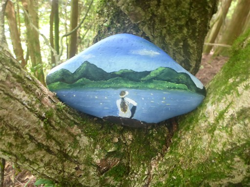
この辺りは植林地帯が延々と続く。
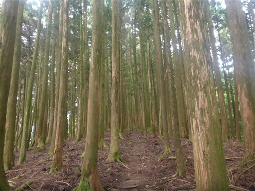
竜爪山薬師岳に到着。標高1051m。
竜爪山は双耳峰で、そのうちの一つのピークだ。
植林に囲まれ展望は全くないが、こちらの方が標高が高い。
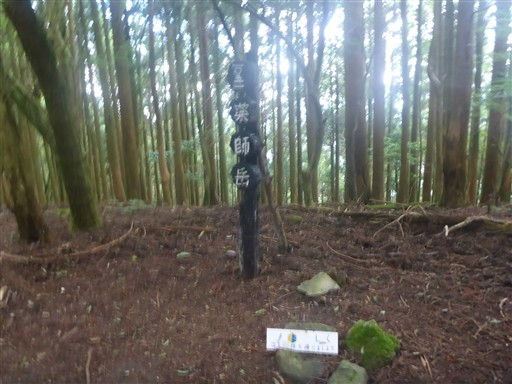
石像が祀られている。お供え物に寿司が置かれているように見える。
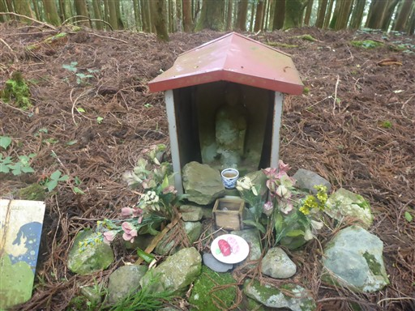
よく見ると、石に絵が描かれている。マグロそっくりだ。
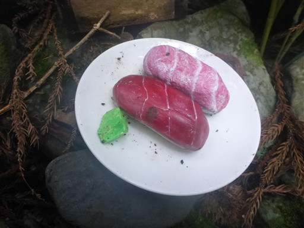
文殊岳目指して尾根道を歩く。
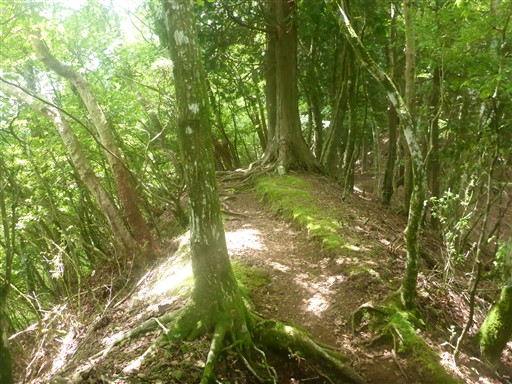
すぐに文殊岳に到着。標高1041m。
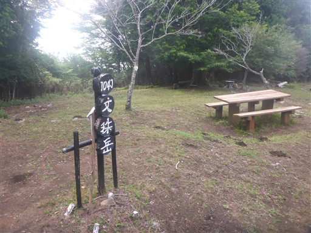
西側の展望が広がっているが、雲が多くて手前の山しか見えない。
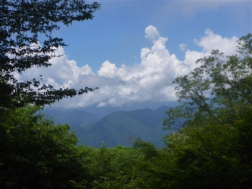
東側は雲に覆われていて、ときどき山頂部も雲に覆われてしまう。
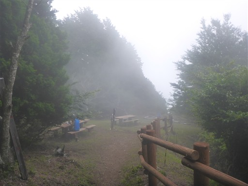
木の切り開きから展望が広がるはずだが、何も見えない。
駿河湾や富士山が見渡せるはずだ。
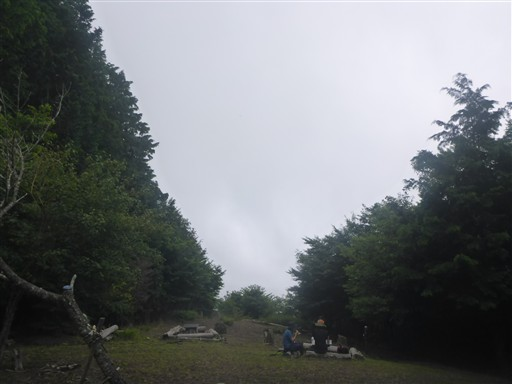
山頂の様子。明るく開けていて、多くのベンチとテーブルがある。
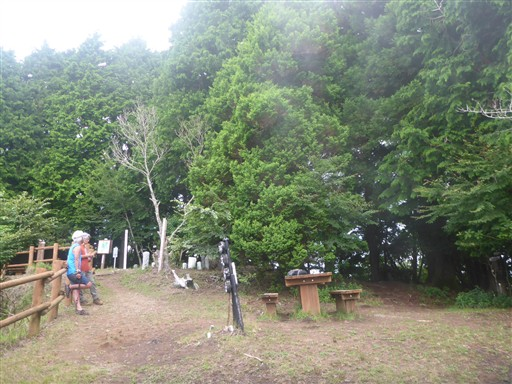
下山道の入口は分かりにくい。
平山登山口に続く登山道を指し示す標識はなく、山頂にいる方に教えてもらう。
登山道は転がり落ちるような急坂が続く。
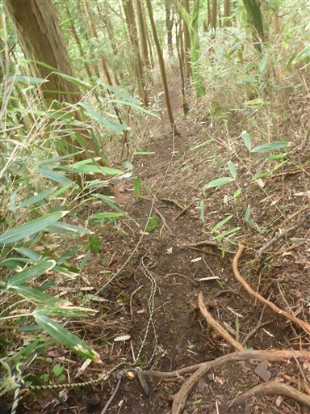
密集した笹薮。

鉄塔があるところで少し展望が広がる。山頂部は雲の中だ。
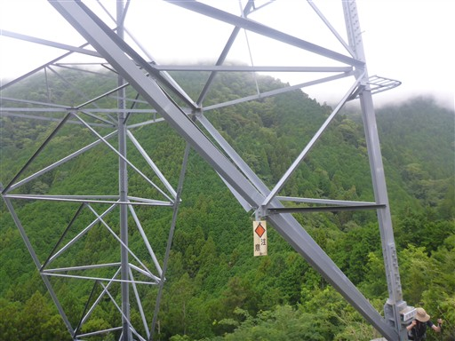
雲の下に駿河湾が見える。下界は晴れてそうだ。
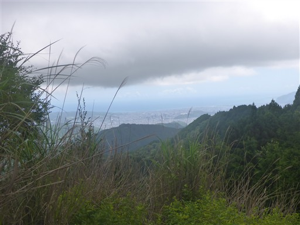
道白山に到着。尾根の上にある小ピークだ。
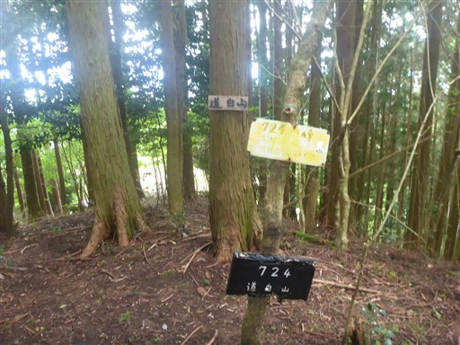
直登ルートの標識。
確かに急な尾根に一直線につけられた、まさに直登ルートだった。
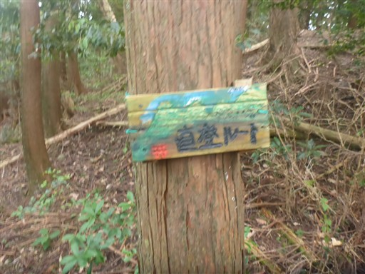
無事下山。
静岡南部の山らしく、植林地帯が多くて地味な山だった。
山頂からは展望が広がらず残念だったが、穂積神社や沢沿いの道などを楽しめた。
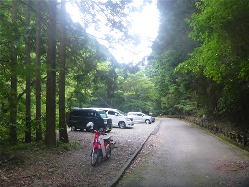